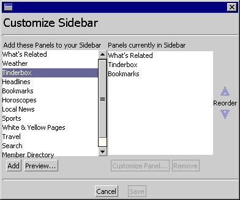

Seamonkey ブラウザ 文字コードメニュー UE Specifications
Written by: Katsuhiko Momoi
Last Update: 11/29/99
Discussants: Bob Jung, Kat
Momoi, Erik van der Poel, Catalin
Rotaru, Frank Tang, Michael
Kaply.
Thanks to earlier comments & suggestions by Tague
Griffith & Kathy Brade.
Comments & Suggestions to: Mail: mozilla-i18n@mozilla.org,
Newsgroup: netscape.public.mozilla.i18n
コンテンツ:
Note 1:
以下は、上に並べた人々との間で議論したものをベースにした、私のオリジナルドキュメントである。
それは、エンコード/文字セット関連の問題や将来の to-do アイテムと同様に、
ブラウザ文字コードメニュー UI の提案を含んでいる。
以前のバージョン(1.1 and 1.2)との違いは、このドキュメントの最後に
加えられたバージョン履歴セクションに記述されている。
Note 2:
このドキュメントは、ブラウザ文字コードメニュー UI 詳説を含んでいる。
それは、 Editor や Messager とほぼ同じメニューを共有すると思われる。
しかしながら、他のコンポーネントのための文字コードメニューの詳細は、
いずれ遅れて来るだろう。
ここで描かれたメニューの詳説は、より早い段階のドキュメントの中の
他の提案にとって代わるだろう。
Note 3:
"encoding"(そして "charset") という名前は、
文字コードメニューの下に並べられた個別アイテムを参照させるために、
このドキュメントの中で同じ意味で使われるだろう。
(動的な) 文字コードメニュー: 一般的な特徴:
- Naming:
- Browser と Messenger と Editor は、同じ View | Character Coding メニュー構造を共有する。 ( 他の名称の選択は: Character Encoding と Character Code) Character Coding は mozilla-i18n newsgroup の中で述べられた、 強力なサポートを持っていた。
- メニューの利便性:
- Character Coding メニューは View sectionの下のどのブラウザウィンドウインスタンス上でも利用できるだろう。 それはまた、 View | Frame Character Coding. 配下で現在開いている どのフレームの中でも利用可能になるだろう。
- Character Coding メニューはまた、 主な View | Character Coding メニューを持つ全てのウィンドウ上と、 そのようなウィンドウの中に含まれるフレームの中の Contextual なメニュー から 利用できるべきである。
- 他のウィンドウ:
- Editor、Messenger、そして Messenger Compose ウィンドウが標準的で contextual な メニューを利用できることが期待されている。
- 他のウィンドウについてはどうだろう？一般的に言えば、文字コードメニューは ソースデータエンコーディングが Mozilla で要求されている Unicode では ないソースデータエンコーディングの、または、 Mozilla 内部で使用される Unicode とは別の、何らかのエンコーディングで出力される、全てのウィンドウ、 で使用されるために利用できるべきだ。 Future To-Do section の中のより多くの情報を見なさい。
- メニュー構造:
- View | Character Coding メニューは、 下のイラストのような ２階層構造を持つ。(Note: ツリービューの中のイラスト、 "-->" はメニューの別のレベルのオープンを意味している。)
- それは、平均的なユーザは階層-1 のメニューを最も使用し、 階層-2 のメニューはより進んだ国際的なユーザをターゲットとしている ことを予期している。
- カスタマイズ設定ダイアログは階層-1のメニューの中野アイテムのために 利用されるだろう。それは、一般的なユーザが頻繁に設定ダイアログを 使用すべきではないという、私たちの希望である。 これらは、インストレーションで適切に設定されるか、 ユーザの選択したデフォルト言語に従って調節されて出荷されるべきである。
ツリービュー イラストレーション:
-
View -->
Character Coding --> (The 1st tier)
Customize ... but only one can have a check mark.
Auto-Detect (Japanese)
Auto-Detect (Korean)
----------------------------------------- (solid line separator)
(Static menu items) -- no limit to how many Static encoding items can appear here via Customize ... Pref Dialog
Japanese (Shift_JIS)
Japanese (ISO-2022-JP)
Japanese (EUC-JP)
(Encoding History menu items) -- up to 5 items with recent encodings w/ most recent at top.
Western (ISO-8859-1)
Cyrillic (KOI8-R)
Chinese Traditional (Big5)
More ... - -> (The 2nd tier)
(The remaining encoding names listed alphabetically without separators)
Central European (ISO-8859-2)
Central European (Windows-1250)
Central European (MacCE)
.....
.....
....
２階層のメニューイラストレーション:
1st Tier Menu (View | Character Coding):
| Auto-Detect (Japanese)
Auto-Detect (Korean) |
| Japanese (Shift_JIS)
Japanese (EUC-JP) Japanese (ISO-2022-JP) Western (ISO-8859-1) Cyrillic (KOI8-R) Chinese Traditional (Big5) More ...
|
* もし、ユーザが最初のセクションの一つを選択したならば、
これらは Auto-detectin モジュールに対して check mark されるべきである。
** それらは、現在のドキュメントの '決定された' エンコーディングに一番近い
bullet でなくてはならない。
2nd Tier Menu (View | Character Coding | More ...):
** Alphabetical Listing without separators
| .Arabic (ISO-8859-6)
Arabic (Windows-1256) Armenian (ARMSCII-8) Central European (ISO-8859-2) Central European (Windows-1250) Central European (MacCE) etc. ... ... |
** Every new window or frame should have a Character Coding menu consisting of the Tier 1 and Tier 2 menus. See below for details of these menus.
- 階層１: View | Character Coding メニュー:
- Section 1: 自動判別モジュールセクション. checkmarkは使用されているモジュール上に位置する。
- Netscape ブランドのために、そこには選択された(=checkmardされた)一つの国際的な自動判別モジュール、 すなわち、 Auto-Detect(Universal). がある。 もしそこで Auto-Detect (Universal) が利用できない(e.g. Mozilla builds)ならば、 我々はこの階層で 他のモジュール他のモジュールを持つことになる。最終的なリストは 存在するモジュールの利便性と有効性に依存し、Mozilla のための提案された２モジュールは: Auto-Detect (Japanese) と Auto-Detect (Korean).である。 そこには、Mozilla のあるバージョンのために、少なくとも一つの自動判別モジュール がなくてはならない。そこには、Mozilla リリースのためのフィールドから貢献された Universal Detector があることが望まれる。
- 自動判別モジュールリストのカスタマイズ:
- 設定ダイアログを通してカスタマイズされた何が、階層１のリストに現れるだろう。 より詳細は、以下を見なさい。
- あなたは、ユーザが好む階層１のメニュー上に現れる多くの判別モジュールと 同じようにカスタマイズすることができるが、 １度に、１つだけが使われる／有効である。
- モジュール名: 現在利用可能なモジュールは以下の名前をつけている。 (Note: "名前" は M11 から変更した。) 将来のモジュールはこの名称規定に従うべきである。
- Auto-Detect (Universal)
- Auto-Detect (Chinese)
- Auto-Detect (Chinese Simplified)
- Auto-Detect (Chinese Traditional)
- Auto-Detect (East Asian) -- covers CJK
- Auto-Detect (Korean)
- Auto-Detect (Japanese)
- Auto-Detect (Russian)
- Auto-Detect (Ukrainian)
- Section 2: 静的(カスタマイズ可能)なエンコーディング + ５つの新しいエンコーディングのリストは 現在のブラウザウィンドウの中で使用される。
- 階層１のメニューの Section 1 と Section 2 の間にはラインセパレータがある。
- このセクションのトップに は 静的で／好みのエンコーディング リストである。 L10n は、違うマーケットのために、そこにあるべきであるどんなエンコーディングにでも カスタマイズされるだろう。 US マーケットのために、デフォルトはWestern(ISO-8859-1). であるだろう。 そこには、このセクションの中に並べられた 少なくとも一つのエンコーディングリストがユーザのデフォルト言語のために存在する。 このリストは何らかの新しく開かれたブラウザウィンドウの中に現れる。 ユーザはこのリストを Customize Character Coding Menu 設定ダイアログを 通してカスタマイズできる。( 詳細のために、言語関連の設定の以下 を見なさい) いくつの静的なアイテムが階層１に表示されることができるか、制限はない。 もしカスタマイズ設定ダイアログを通して選択された１つの言語ファミリーより多くければ、 選択されたエンコーディングはファミリーの間にセパレータ無しで並べられるだろう。
- このセクションの次 -- セパレータ無しで -- は現在のウィンドウコンテキストで 使用されている新しいエンコーディング(５つ以上の)のリストである。 エンコーディングのキャッシュ制限は５である。
- 新しいウィンドウやフレーム毎のエンコーディング キャッシュ は一つのグローバルキャッシュリストを参照する。どの新しいウィンドウやフレームも 新しいカレントエンコーディングを取得したのと同様に、このリストを更新する。
- エンコーディングキャッシュリストは セッションからセッションへと引き継がれるべきである。
- マークされたエンコーディングを示すbullet は Mozilla で決定された通りの現在の (ドキュメント) エンコーディング／文字セット である。 Bullet なアイテムは静的なメニューセクションか最も新しい エンコーディングセクションのどちらかになることができる。 （現在の Encoding/Charset とメニュー関連アクションの意味するところのために 下を見なさい。）
- 2nd Tier: The rest of available encoding items.
- More ...:
- This menu will open to a list of the remaining Character encoding sorted alphabetically without a separator between groups. For example, all Japanese items will precede all Unicode items, etc. The list here will include the entire encodings set minus the Static and Most Recent items. (Note: This will include "User-Defined".)
- We will use the UI names of encodings for sorting. Thus the encodings under the same language or encoding family will cluster together. We have an internal document by Bob Jung which lists the UI names to be used for Mozilla but this is not currently externalized to the public. However, UI names used in M11 Release builds and later under the 6 sub-menus with names like View | Character Set: ISO contain the correct UI names for encodings to be used. Until the latter document is externalized, the reader is referred to the encoding UI names in recent Mozilla builds.
- The menu will include dynamic additions if encoding/charset plugins exist in the CharPlugin directory. See Cata's extensibility model document for details.
- This menu must be scrollable so that the entire list will be visible under all platforms.
- Customize ... Preference Dialogs:
- Both Auto-Detect menu and Static/Most Recent encodings menu will be customizable via Customize ... Preference Dialogs. (In an earlier proposal, these Dialogs were also available from the menus, but they were eliminated in version 1.2 of the proposal.)
- These preference dialogs allow the user to modify/customize the target menu to add or delete items to/from the menu from/to a complete list of encoding/detector items. The dialog window should also allow the user to change the ranking of the target list items.
- The current suggestion for UI is to adopt/adapt the template used in the "Customize" dialog window for the Browser and Messenger sidebar window. This is a re-usable dialog and easily adaptable to our needs. See this Mozilla Customize dialog for Sidebar window for illustration:

意味論(Semantics):
- View | Character Coding メニューによる選択状況の 変更は、以下を意味します。
- 現在のページやメッセージのソースが、選択された エンコーディングで記 述されていると仮定して、それらを読み込み/再読み込みします。私達はこの考え 方にこだわりを持っています。
- 「現在の エンコーディング/文字集合」:
- Character Coding メニューにおいては、「現在のエンコーディ ング/文字集合」は、常にbullet(黒い丸印)で示されます。全ての Character Coding メ ニューにおいて、bulletが示されていなくてはなりせん。「現在のエンコーディング」を 示す印が付いていないような文書は存在しません。Mozillaにおいては、自動識別モジュー ルはもはやエンコーディングの一種としては扱われないということに注意してください。 これは、bulletが常に現実のエンコーディングを示していることを保証するため であり、このようにしなければ、「現在のエンコーディング」の意味が首尾一貫しなくな るからです。
- 「現在のエンコーディング/文字集合」 の決定は、以下の項目の順番で行われます。
- HTTP Charset (サーバ/スクリプトより)
- 文書の Meta-Charset タグ
- 自動識別されたエンコーディング(選択されていた場合)
- 直前に用いられていた、「現在のエンコーディング/文字集合」
- 「予備のエンコーディング」(Character Coding メニューの一覧の最初に表されているエンコー ディング) -- 上記の全てにあてはまらない場合、つまり、ブラウザが **最初に** 開い たページが、空白ページであった場合や、HTTP プロトコルによっても、Metaタグによっ ても、自動識別によっても charset (文字集合)を得られないような文書であった場合。
- 上記のアルゴリズムは、ユーザが以前読んだページにもう一度戻って来た場合には適用 されません。そのような場合には、キャッシュされていたエンコーディングが使 用されます。
- 上記のアルゴリズムにおいて、「現在のエンコーディング/文字集合」を 直前 の「現在のエンコーディング」として現時点での「現在のエンコーディング」 の決定に用いる際には、「現在のエンコーディング/文字集合」は「デフォルトの エンコーディング/文字集合」と捉えることができます。それ以外の状況においては、エ ンコーディングに bulletが付けられていることは、現時点においてMozillaがそのエンコー ディングを文書のエンコーディングと見倣しているということを示しているので、 bulletが付いているエンコーディングを「現在のエンコーディング」と呼んだ方 が便利です。上記以外の場合では、以下で述べる予備のエンコーディングの方が 「デフォルトのエンコーディング」と呼ぶにふさわしいものです。
- 自動識別モジュール:
- ユーザはCustomize.. 設定ダイアログを用いて、階層1のリストに表示さ れる自動識別モジュールの名前を複数選ぶことができます。しかし、その中で同時に 使用できるのは、一つだけです。
- 現時点で選択されている自動識別モジュールはチェックマークで示されます。自 動識別モジュールは、「現在のエンコーディング」として何が選択されているかに関係な く適用されるので、bulletによって示される「現在のエンコーディング」とは視覚的に異 なる印によって示されます。
- 入手したモジュールを簡単に追加できるようなアーキテクチャが採用されています。モジュ ールの追加方法については後で説明します。
- 国際的な自動識別モジュール(Universal Detection module(s)):
- もし、文字コードの国際的な自動識別モジュールとして有効なものを入手できな いならば、私達は少くとも一つの自動識別モジュールをメニューに載せます。地域版 (L10n)は、言語/エンコーディングに固有の、適切な自動識別モジュールと共に配布され るでしょう。(現時点での私達の提案については、上記を参照してください。)
- 国際的な自動識別モジュールを入手できた場合は、それを全ての言語版でのデフォ ルトの自動識別モジュールとします。ただし、その場合でも、私達はCustomize Auto-Detect ...設定ダイアログによって、他の 言語/エンコーディングの識別モジュールを使用できるようにするでしょう。
- この文書が書かれている時点において、Mozillaのビルド(Netscape ブランドのビルドで はなく)には、国際的な自動識別モジュールが含まれる予定はありません。その理 由は、国際的な自動識別に関する私達の現時点での計画は、サードパーティーによる商用 製品に基づくものだからです。 Mozillaの共同体の誰かが国際的 な自動識別モジュールを作ることができるならば、どんなに素晴しいことでしょう。
- 各モジュールの有効性は検証され、有効でないモジュールは、ついにはモジュールの一覧 から削除されるでしょう。
- 「予備のエンコーディング」:
- コミュニケータ(Communicator)4.x においては、"Set Default Encoding" (「標 準の文字コードセットに設定」)メニューにおいて、「標準」のエンコーディングを設定 することができました。
- Mozillaにおいては、もはやこの設定項目は存在しません。しかし、「予備のエンコー ディング」という概念は残してあります。それは、常に静的なエンコーディングのメニュー の最初に表示される項目になります。それは、HTTP の charset、meta HTTP-Equive タグ、自動識別、直前の「現在のエンコーディング」のいずれを用いてもエンコーディン グを決定できないような場合に用いられます。
- Mozillaにおいては、コミュニケータ4.xの場合とは違い、「予備のエンコーディング」は 極めて限定された状況でのみ用いられることが期待されます。
- 「予備のエンコーディング」は、設定ダイアログにおいて"Default"という単語を 後に付けて表示されることが期待されます。詳しくは、今後の課題 の項目を参照してください。
- 文字集合/エンコーディングの上書き:
- ユーザがメニューを用いてエンコーディングを変更すると、 1) サーバにより指定された HTTP の charset、 2) 文書の Meta-charset 情報、 3) 自動識別の結果、 4) 直前に選ばれていた/予備のエンコーディング を用いて決定されたエンコーディングを、上書きすることができます。
- 新しい文書が読み込まれた場合や、現在の文書が Super-Reloadingによって再読み込みされた場合など、文書がその大元となるペー ジを参照して書換えられた場合には、上書きは持続しません。既に行ってしまった上書き を取り消すために、ユーザは文書を Super-Reload することができます。
- 通常の再読み込みにおいては、上書きは持続します。
- 未解決の問題:
- 文字集合/エンコーディングの上書きは、最上位の文書にのみ影響 すべきでしょうか、それとも最上位の文書に含まれる全てのフレームに影響すべきでしょ うか?
- (Michael Kaplyが提案したように、)設定メニューに、上書きの 挙動を制御するような項目を設けるべきでしょうか?例えば、「常に文書に指定されたエ ンコーディングを尊重する」とか「ユーザ指定のエンコーディングを使う」といったよう に。
- 継承:
- コミュニケータ4.xにおいては、新しいウィンドウを開く際には、親となるウィンドウで 用いられていたエンコーディングが継承され、親ウィンドウのエンコーディングが不明で ある場合にのみ、「標準」のエンコーディングが用いられていました。
- Mozillaにおいては、新しいウィンドウにおいても、先に述べたアルゴリズムによってエ ンコーディングが決定されます。そのアルゴリズムを以下再掲します。(注:「現在のエン コーディング」が存在しないような状況で空白ページを開いた場合には、「予備 のエンコーディングが「現在のエンコーディング」として用いられます。)
- HTTP Charset (サーバ/スクリプトより)
- 文書の Meta-Charset タグ
- 自動識別されたエンコーディング(選択されていた場合)
- 直前に用いられていた、「現在のエンコーディング/文字集合」
- 「予備のエンコーディング」(Character Coding メニューの一覧の最初に表されているエンコー ディング) -- 上記の全てにあてはまらない場合、つまり、ブラウザが **最初に** 開い たページが、空白ページであった場合や、HTTP プロトコルによっても、Metaタグによっ ても、自動識別によっても charset (文字集合)を得られないような文書であった場合。
- エンコーディングのキャッシュ:
- 階層1の、静的な/好みのエンコーディングの項目の下部には、最近使用されたエ ンコーディングの一覧が表示されます。
- 最近使用されたエンコーディングのうち、静的なエンコーディング一覧に表示されていないもの5つが表 示されます。最後に使用されたエンコーディングが最も上に、その前に使用されたエンコー ディングが次に、というように表示されます。
- IE5では、この一覧がいっぱいになった際に削除する項目を決定するために、興味深いア ルゴリズムを用いています。私達はさしあたって、時刻の基づく単純な方法を採用するこ とにします。最後に使用されたものが最も上に、その前に使用されたものが次に、という 方法です。
- 新しいウィンドウやフレームが開かれる際には、大域的なエンコーディングのキャッ シュの一覧を参照し、必要であれば更新します。これによって、実装が単純になります。 次にブラウザを使う際に再び利用できるように、最近の5つのエンコーディングからなる 一覧は、prefs.jsに格納されます。
- フレームと エンコーディングのキャッシュ:
- フォーカスがメインウィンドウ上にあるとき、メインの "View | Character Coding" メニューはブラウザのメインウィンドウについての最近のエンコーディングのキャ ッシュのみを一覧表示します。フォーカスがフレーム上にあるときは、このメニューは "View | Frame Character Coding" メニューに変化します。
- 全てのフレームやウィンドウに関して、 静的なエンコーディング一覧と最近のエンコーディングの一覧 は、状況依存型のメニューとして取得可能です。(=Caracter Coding メニューは状況依存 型のメニュー一覧上にある必要があります。)
- メインウィンドウと、全てのフレーム、新しいウィンドウの各々について、 エンコーディングのキャッシュの一覧を別々に管理する必要はありません。例えば、あるフ レームに関する最近の一覧は、以下のようにして作成可能です。
- 新しいフレームやウィンドウは、現在のセッションの開始時に作成された大域的なエンコー ディングのキャッシュの一覧を参照するでしょう。基本的なアイデアは、新しいウィンド ウやフレームのための一覧の生成時に、最後に使用されたエンコーディングをその一覧に 加える(そして、必要に応じて削除する)ということです。
- フォーカスがメインウィンドウ上にあるときは、"View | Page Info" メニューによって、 メインウィンドウのエンコーディング情報が表示されます。フォーカスがフレーム上にあ るときには、"View |Frame Info" メニューが選択可能となり、それによって、フレーム のエンコーディング情報を表示できます。すなわち、Page/Frame Info メニューもまた、 状況依存型のメニューとして利用可能です。
今後の課題:
- 他のウィンドウにおける Character Coding メニューの可用性:
- 未解決の問題: メッセンジャー(Messenger)や、 コンポーザー(Composer)、メッセージ作成ウィンドウなど、ブラウザ以外のウィンドウに おいて、上記のような基準によって必要と判断される場合 に、私達は単純に状況依存型のメニューを提供するかもしれません。
- Encoding/Charset Cache
- 文書のエンコーディング情報をキャッシュしなくてはなりません。
- エンコーディングのキャッシュは通常の再読み込みや、ページ情報の表示にも使われます。 以前見たページに戻る際に、キャッシュの情報が必要です。しかし、以前見たページのエ ンコーディングを思い出すためには、5個という数字は明らかに十分ではありません。必 要なキャッシュの一覧の大きさはいくつでしょう?現在のセッションの全てというのはど うでしょうか?
- 以前見たページに戻る際に、エンコーディングのキャッシュを作りなおすことも必要です。
- Super-reloading(Shift/Opt +再読み込み)によって、キャッシュの情報は作りなおされ、 大元の文書に合わせて戻らなくてはなりません。
- 未解決の問題: ブラウザ、メッセンジャー、コン ポーザーが同じエンコーディングのキャッシュ一覧を用いるようにするか、カテゴリ別に 別々のものを用いるようにするか決めなくてはなりません。メッセンジャーで用いられる 文字のエンコーディングはブラウザで用いられるものとは異なる可能性があります。その ため、それらを別々に保持しようという議論があります。
- 履歴のキャッシュは既に文書のエンコーディングについての情報を含んでいてもよい。 それは、現在の状態を知るためにも必要でしょう。(waterson?)
- Customize .. Character Coding メニューダイアログ:
-
ある特定のエンコーディングは、Customize... Character Coding ダイアログの
一覧から削除されなくてはなりません。例えば T.61-8bit や Modified-UTF7-Imap など
は、標準的なユーザにとって混乱の原因になるだけであり、通常の用途ではそれらは使用
されません。バグ15867を参照してくだ
さい。
- Mozillaの内部でのみ使用されるような、無視されるべきエンコーディングの名前を自動 的に区別するための方法の一つとして、それらのエンコーディングの名前の最初に、 "ig-"という文字を付けるという方法があります。例えば、ig-T.61-8bit という具合です。 ("ig" は、「無視(ignore)」の意味です。)
- エンコーディングの名前を選ぶ際に、全てのエンコーディングの一覧から選ばなくてはい けないようにするのではなく、言語やグループによって選択できるようにしなくてはなり ません。例えば、日本語を選択すると3種類のエンコーディングが追加されます。そして、 そのようにして作ったStaticの一覧を、削除したり、並べ替えしたりして、後から調整で きるようにしなくてはいけません。
-
自動識別とCharacter CodingのメニューのためのCustomize...ダイアログ
は、言語に関係する他のダイアログとグループ化されていなくてはなりません。言語
の設定は、以下の一覧に示される項目を提供しなくてはならず、それらの項目は
Navigator | Languages または Languages | 以下にグループ化されて配
置されなくてはなりません。
- Navigator:
- Languages:
- 受理する言語のダイアログ
- 自動識別のモジュールのダイアログ
- Static なエンコーディングメニューのダイアログ
- その他
- 選択の過程で参照できるように、 Customize... ダイアログにおいてヘルプ情報を提供し なくてはなりません。私達はダイアログについての適切な情報を提供することで、 TechWritingグループを助ける必要があります。
- メインツールバーへCharacter Coding メニューアイコンを追加するオプション:
- 私達は、メインツールバーにCharacter Coding メニューのアイコンを追加するような設定が可能に なるよう、望むかもしれない。
- More... エンコーディング/文字集合の一覧: 階層2の一覧
- 現時点では、私達は、More... メニューの設定は変更できるようにはしないという判断を しています。しかしながら、そのメニューを設定ダイアログで変更できるようにするため の手段を提供すべきと提案している人々の存在にも言及しておきます。何人かは、メニュー の残りの部分は多くのユーザにとって無用のものであるので彼等にそれを見ることを強い るべきではないと提案しています。このような議論は、メニューがスクロール可能である という事実が一覧の要素を無限に生成することを許しているわけではないということを指 摘しています。
- 一つの可能性は、More... メニューを表示しなくなるような、設定オプションを 作ることです。
- 他の可能性としては、ユーザがこのメニューを設定ダイアログで変更可能にすることです。
- 単純にスクロール可能にするのではなく、More... メニューを変更可能にするべ きです。
- ユーザ定義のメニュー項目は、単純に腰掛けのエンコーディングとなります。私 達はUnicode PUAを用いてこれに対処する必要があります。バグ 6588を参照してくださ い。
- 「予備のエンコーディング」:
- それは、静的なエンコーディングメニューの一覧における最初の項目になります。Customize...設 定ダイアログのエンコーディングの一覧において、(Default)という単語が 最初の要素に自動的に付加されるようにしなくてはなりません。 (例えば、コミュニケータ4.xにおいては、複数のIMAPサーバがサーバ設定で選択された場 合のデフォルトのIMAPサーバが同様の方法で扱われています。)
- 「現在のエンコーディング」が実際のエンコーディングを反映していない場合: 文書のエンコーディングがHTTPプロトコルや文書のcharsetタグによって与えられていな い場合、「現在のエンコーディング」や「予備のエンコーディング」が使われる可能性が あります。そのような状況においては、不整合は簡単に起こります。例えば、bulletによっ て「現在のエンコーディング」が日本語(Shift_JIS)と示されているにもかかわらず、実 際のエンコーディングがASCIIである場合などです。これを解決する一つの鍵は、自動識 別の発達です。苦痛を緩和するもう一つの方法としては、文書がASCII以外の文字を含ん でいない場合には、日本語フォントではなくWesternフォントを選択するようなフォント 選択ルーチンを用いることです。
-
最近使用されたエンコーディングを表示するメニューにとって、5個というのが十分な数
字にならなくてはなりません。
- 目次を追加.
- ネットスケープ内部での議論を知らない人にも本ドキュメントが 分かりやすくなるようにあちこち編集し直した.
- 用語の統一: メニュー名としてCharacter Coding, 個々のメニューアイテム、あるいはそのアイテムが表す「コーディングスキーマ」を encoding (あるいは charset)と統一した.
- Character Coding メニューが モジラで通常表示される場所を明確にした.
- メニューの1段めの重要性 と,ユーザから見た,カスタム設定との関連についての記述を追加.
- ネットスケープブランド対モジラリリースにおける ユニバーサル自動認識モジュール に関する問題の明確化.
- 固定エンコーディングリスト: 少なくとも１つはアイテムがないといけないことを追記. 固定リストは空にできない.
- More ... エンコーディングメニュー: (結局のところ) スクロール可能になるはずであることを追記.
- 文字エンコーディングユーザインタフェース名: 内部ドキュメントへの参照を削除した. 外部へ公開可能になったら再度追記します.
- ブラウザ履歴(Browser History)メニュー区別するために 文字集合履歴(Charset History) という語を エンコーディングキャッシュ へ変更した.
- 文字集合/エンコーディングの再定義:
- 振舞の再定義を設定可能にしようという提案を追記.
- エンコーディングキャッシュとフレーム:
- 開いている全てのウィンドウ、フレームからアクセス,更新できる 共通のエンコーディングリストは１つだけであることを明確化.
- 残課題:
- エンコーディングキャッシュ:
- 後のバージョンにおいて考慮すべきことをいくつか追記した. これには若干の複雑な問題も含まれます.
- 次候補エンコーディング: 次候補エンコーディングの設定ダイアログでデフォルトエンコーディングをどのように指定するかを明確にした.
- More ... エンコーディングメニュー: 現時点では、我々の計画にはないが, More ... エンコーディングメニューをカスタマイズする方法を扱うという提案をいれた.
- ドキュメントの今のエンコーディングが必ずしも実際のエンコーディングを正確に表わすわけではないケースについての小項目を追記.
2 自動認識モジュールと文字エンコーディング一覧 の カスタマイズ... メニューは Customize... Preference ダイアログが優先されるので無視されてしまう. 自動認識モジュール: 日本語,韓国語のための自動認識モジュールの１枚目の一覧を変更した. 可能であればユニバーサル自動認識モジュールのみにして出荷したいと考えている. さもなければ(しばらくは)日本語と韓国語のモジュールで出荷する予定です. ** 中国語モジュールがもし実用レベルであれば、追加するかもしれません. １枚めのメニューに利用されるモジュール名を定義しました. M11から変更されたことに注意してください. (このためバグが潜んでるかもしれません.) チェックマークと,正規の文字集合と自動認識モジュール名の違いを 明確にしました. (4.xでは自動認識モジュールを文字集合の１種として扱ってました.) エンコーディングキャッシュ: 現在のブラウザのセッション中の全てのウィンドウとフレームで 共有される１つの共通のリストがベースにされる. エンコーディングキャッシュとフレーム: Mail/Frame windowに"View | (Frame) Character Coding"メニューのトグルメニューアイテムを追加. フォーカスのあるウィンドウからContextualメニューが使える ようになった. カレント文字集合: カレントのエンコーディング/文字集合を決定するアルゴリズム が修正された. これには、次候補エンコーディングよりも重要なものとして "前回のカレントエンコーディング/文字集合"も含みます. この次候補エンコーディングは最後の頼みの綱、すなわち初めてブラウザを起動して 有効なエンコーディング情報が無いときしか使われません. カレントエンコーディングアルゴリズムが適用されるのは 新規のドキュメント/ページに対してのみであることを明確にした. "back" ボタンで以前にアクセスしたページに戻った場合は, キャッシュされているエンコーディング情報を表示します. レントエンコーディング/文字集合という用語と, デフォルトエンコーディング/文字集合という用語の関係を明確にした. あるコンテキストにおいて、後者は前者の役割を表している. 次候補エンコーディング: 4.xで使われているのと比較して この概念の意味を明確にした. 文字集合/エンコーディングオーバライド: <LANG> 属性への参照は エンコーディング/文字集合オーバライド が無効になったときから削除された. 2通りのオープン方法がこのカテゴリに追加されました: 文字集合オーバライド機能は最上位のドキュメントに対してしか有効でないのか？それともその配下のすべてのフレームに対しても有効なのか？(Erik より) Super Reloadingではオーバライドは ずっと有効にすべきですか? 残課題リスト: エンコーディングキャッシュ仕様を明確にした -- 簡易リロード vs. スーパーリロード. 文字コーディングメニュー -- ちゃんと メインツールバーメニューに配置された. ("パーソナルツールバーから移動".) More .. 字コーディングメニュー --> カスタマイズ ... メニュー項目を用意するという提案が却下され、 それが可能な設定ダイアログメニューに変わりました. 今後のために,"ユーザ定義"の扱いを残課題 から切り分けました.